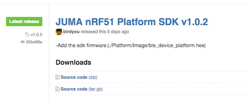
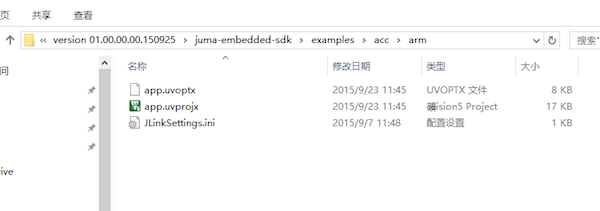
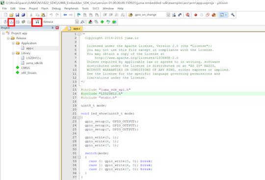
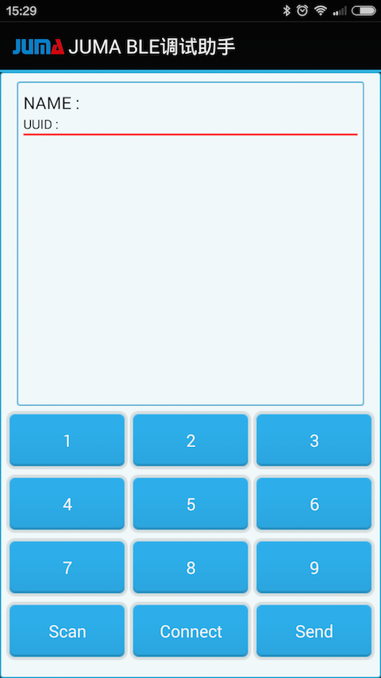
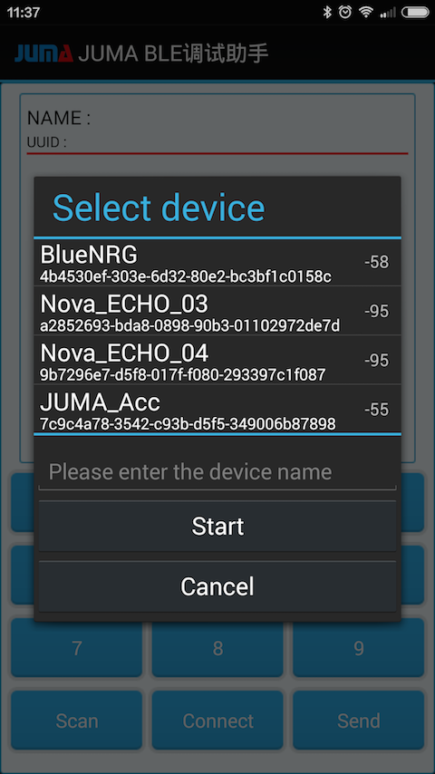
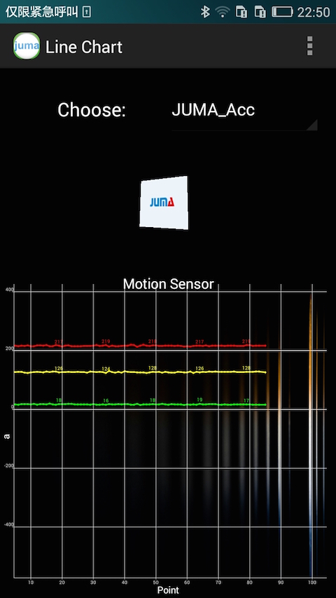
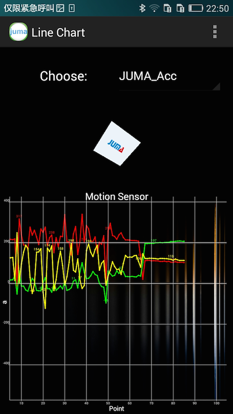

SMP入门案例
1. 获取SDK集成包
下载最新的嵌入式SDK(发布版)：
https://github.com/JUMA-IO/nRF51_Platform/releases
如JUMA nRF51 Platform SDK v1.0.2：

注意，如果您想获知最新的代码改动情况，请使用github的“watch”功能。2. 编译和下载嵌入式端固件
打开对应的acc的例子：

双击 app.uvprojx打开对应的工程项目：之后按照顺序，先点击左侧红框内的东西，然后点击右侧红框内的的东西。（SMP板子必须已经处于连接好的状态）

注：确保嵌入式环境搭建正确，请参阅右侧的“烧入方法”篇幅。3. 使用BLE调试助手连接SMP开发板
您可以从AppStore和应用宝，下载和安装“JUMA BLE调试助手”。
如果使用Android手机，在SDK集成包里含有“JUMA BLE调试助手”，可以直接安装： 
安装好安卓调试助手后，点击Scan进行设备扫描。

之后会看到如下的扫描结果：

- 点击JUMA_Acc进行连接。
- 之后，点击下方的Connect进行连接。
- 然后就会源源不断的收到来自SMP板子的三轴的数据了。
4. 使用MotionSensor APP连接SMP开发板
MotionSensor APP将SMP上三轴的数据显示为波形，它的下载地址见：
http://pan.baidu.com/s/1mgnfWV2
在工程的bin目录下找到MotionSensor.apk，将其安装到Android手机。
打开MotionSensor APP，扫描并连接相应的SMP开发板，会看到三轴数据的波形：

如果您移动或翻转SMP开发板，会发现三轴数据波形的变化：
